Place the sheet a paper vertically and then fold in half vertically.
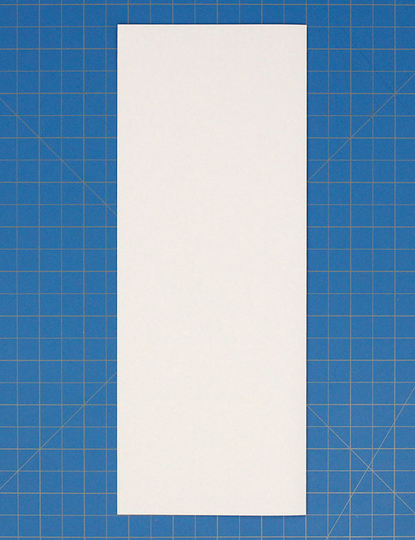Fold both upper corners to the center.
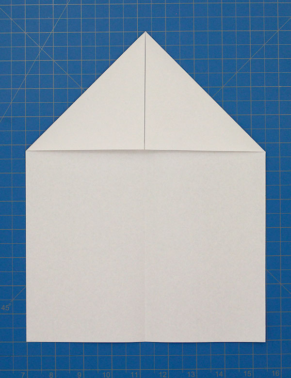Now, fold the outer edges to the center.
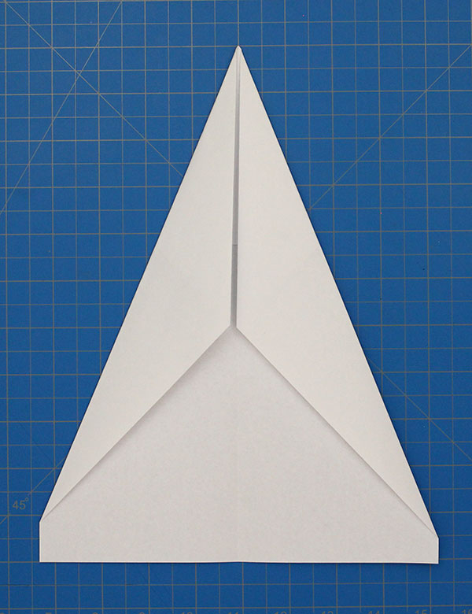Next, open the sheet back up and fold down the right side. The second crease should meet the center line.
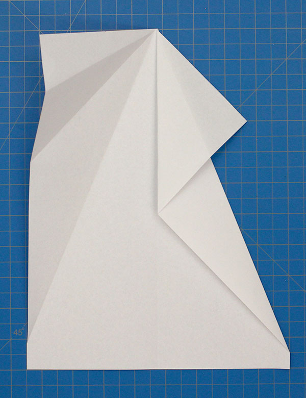Repeat with the other side.
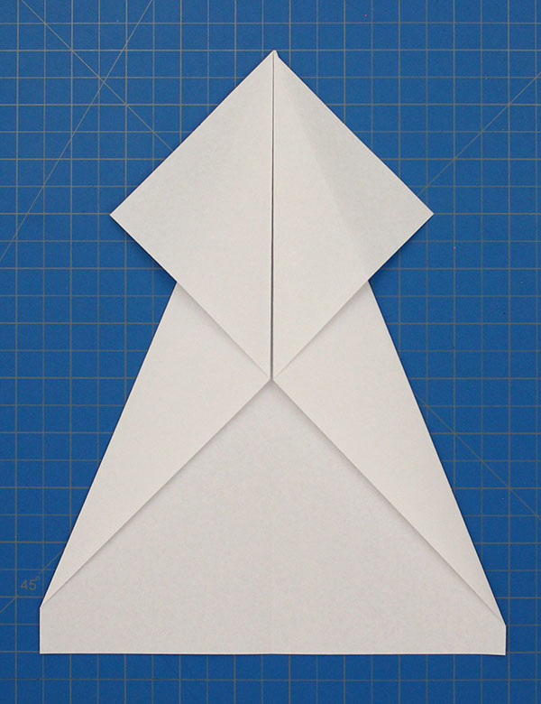Fold down the top peak.
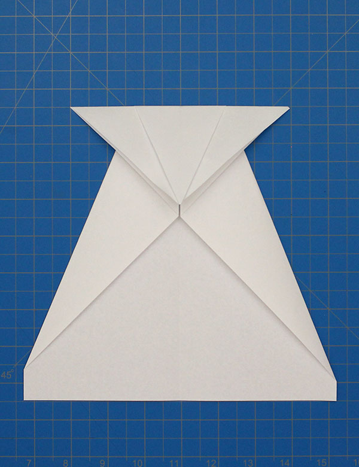Now, fold up the peak to meet the top edge.
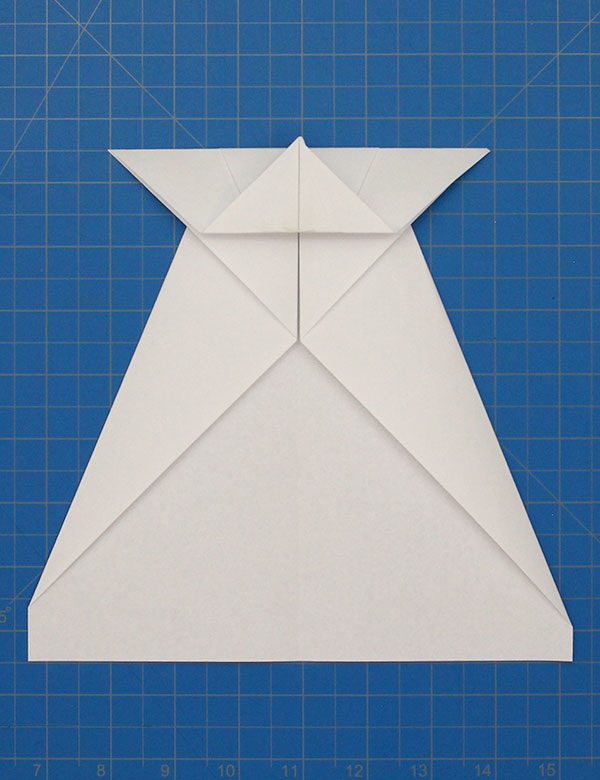Next, fold in the right outer flap.
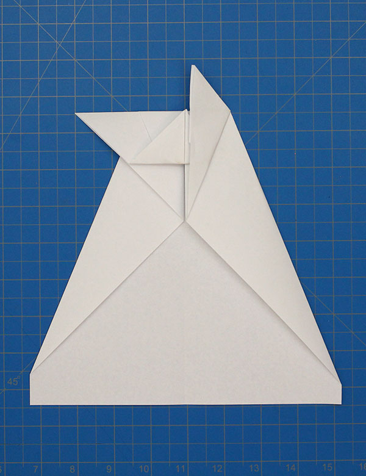Repeat with the left flap.
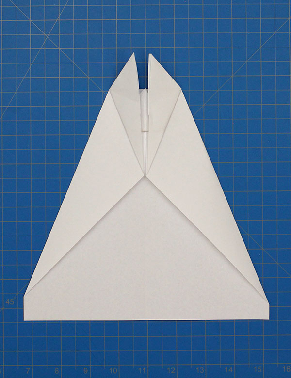Fold out the right flap so that the crease lines up with the outer corner.
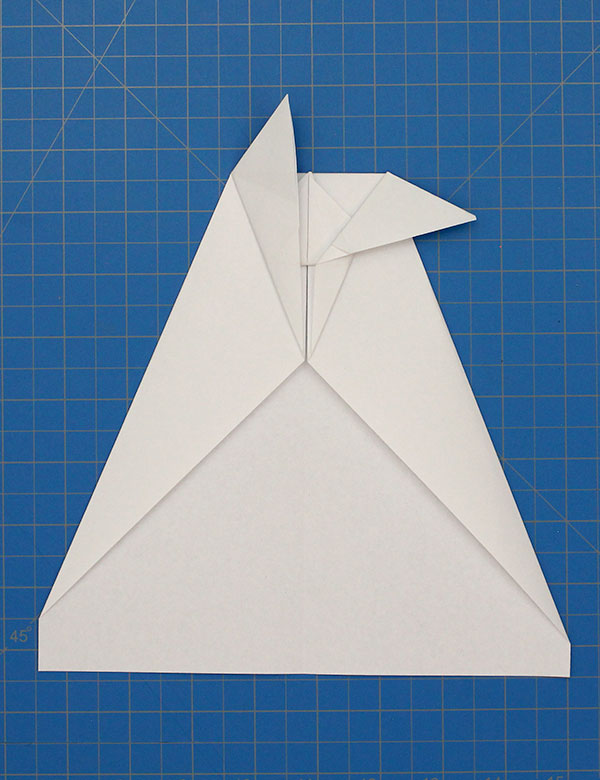Repeat with the other side.
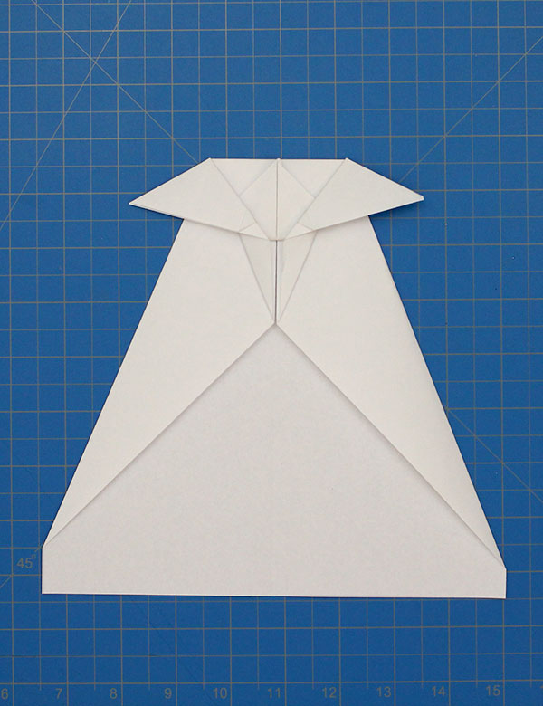Now, fold the plane in half away from you.
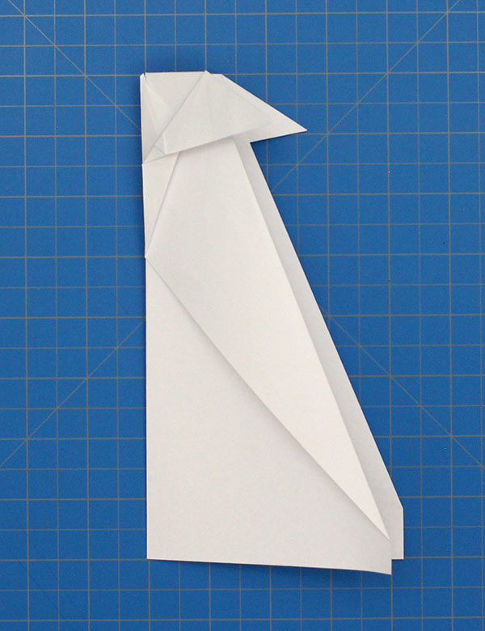Fold down one wing as shown.
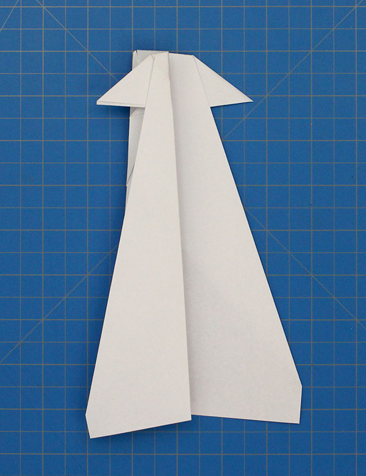This is what the final product should look like.

@2019 All Rights Reserved. paperairplanetutorial.com